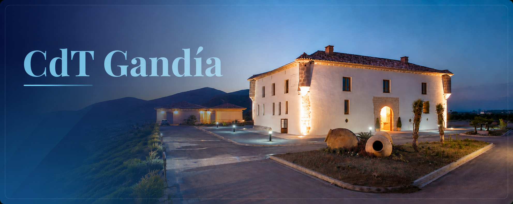
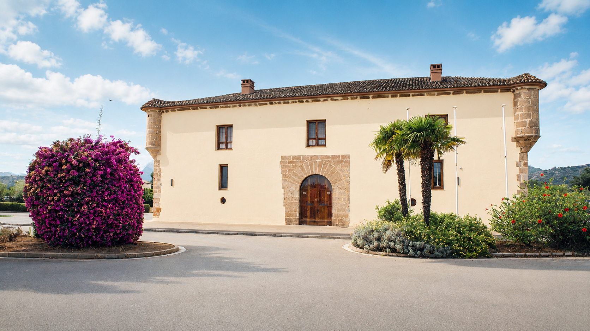
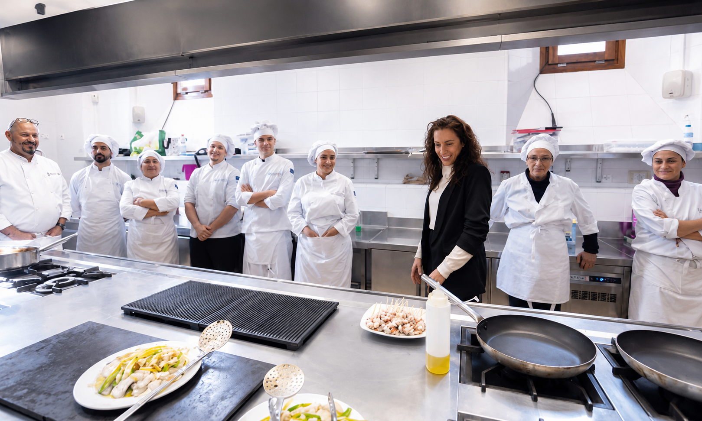

Quiénes somos
El CdT Gandía es uno de los centros de formación de la Red de Centros de Turismo de Turisme Comunitat Valenciana, un proyecto creado para impulsar la cualificación de los profesionales del turismo, la hostelería y la restauración, acercando la formación a las necesidades reales de las empresas del sector. Su objetivo es ofrecer una enseñanza de calidad que contribuya a la excelencia y a la competitividad del destino turístico.
Ubicado en la emblemática L'Alqueria del Duc, un edificio histórico rehabilitado por la Generalitat Valenciana y el Ayuntamiento de Gandía, el centro combina tradición e innovación en un entorno único. Esta antigua alquería fortificada, con siglos de historia, ha sido transformada en un espacio moderno y totalmente equipado para la formación en gastronomía, restauración, turismo y servicios, convirtiéndose en un referente para toda la comarca de La Safor y la Comunitat Valenciana.

Nuestra trayectoria
Desde su puesta en marcha, el CdT Gandía ha formado a miles de profesionales y futuros especialistas mediante una amplia oferta de cursos dirigidos tanto a personas desempleadas como a trabajadores en activo que desean ampliar sus conocimientos o especializarse. A lo largo de los años, el centro ha evolucionado adaptando sus programas a las nuevas tendencias del sector, incorporando formación en cocina, pastelería, sala, sumillería, coctelería, barismo, gestión hostelera, turismo y atención al cliente.
Su metodología combina el aprendizaje práctico con la innovación, favoreciendo el desarrollo de competencias técnicas y profesionales que responden a las demandas reales del mercado laboral.
Un equipo docente de referencia
El equipo docente del CdT Gandía está integrado por profesionales de reconocido prestigio y amplia experiencia en el sector hostelero y turístico. Chefs, pasteleros, sumilleres, especialistas en sala, baristas, expertos en gestión y otros profesionales en activo comparten su conocimiento y experiencia para ofrecer una formación actualizada, práctica y orientada a la realidad empresarial.
Además de transmitir conocimientos técnicos, el profesorado fomenta valores esenciales como la excelencia en el servicio, la creatividad, la innovación, el trabajo en equipo y la atención al cliente, preparando a los alumnos para afrontar con éxito los retos de una industria en constante evolución.

Nuestro compromiso
En el CdT Gandía creemos que la formación es el motor del crecimiento profesional y del desarrollo del sector turístico. Por ello, trabajamos para ofrecer una enseñanza de calidad, basada en la práctica, la innovación y la colaboración con empresas e instituciones, contribuyendo a formar los profesionales que impulsarán la hostelería y el turismo del futuro.